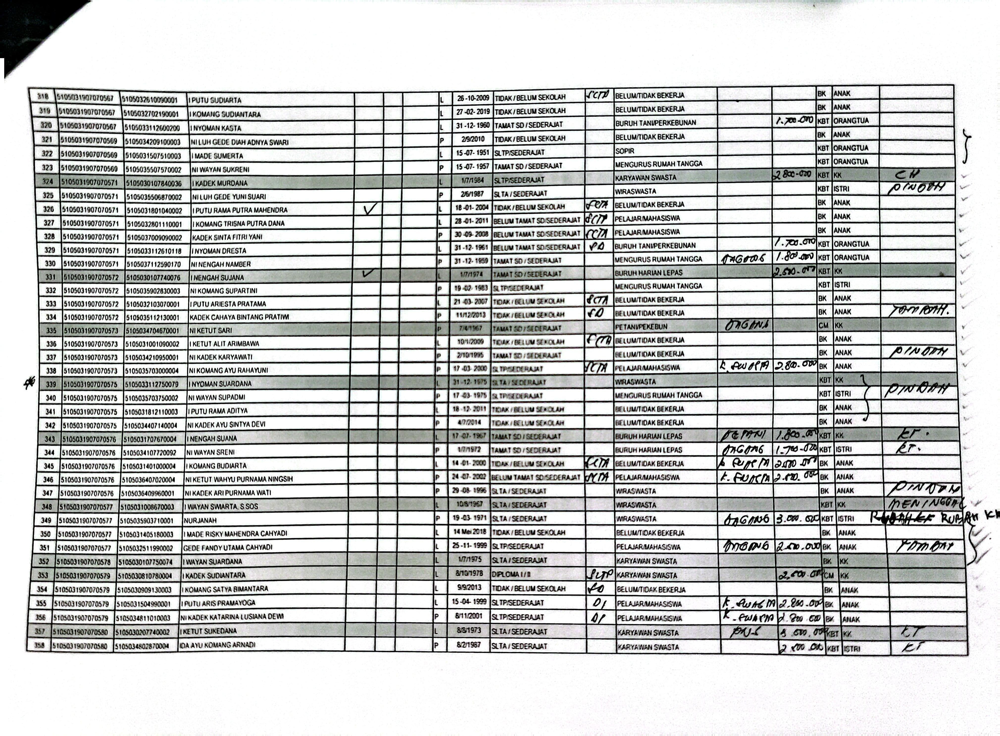

Penjelasan Masalah
Masalah ini biasanya terjadi karena aktivasi Microsoft Office belum selesai atau aplikasi berjalan dalam mode "Read Only".
Langkah Penyelesaian
- Pastikan Microsoft Word sudah diaktifkan dengan benar. 
- Periksa apakah dokumen dalam mode baca-saja (Read-Only).
- Coba jalankan Word sebagai administrator.